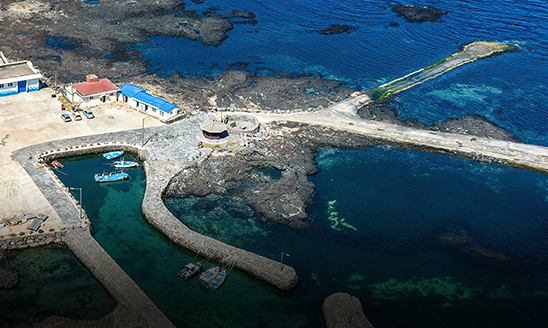
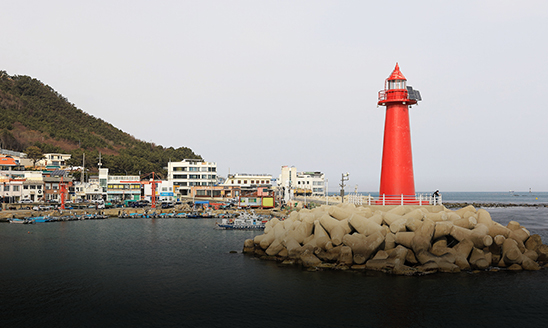

어항 안전점검
- 홈
- 사업소개
- 쾌적한 어항
- 어항 안전점검
사업목적
- 국가어항 기본시설에 대한 안전점검과 적정한 유지관리를 통하여 시설물의 기능과 안전 유지 및 재해예방 도모
- 어항 시설물에 대한 효율적인 안전관리 체계 구축, 노후시설 또는 취약시설에 대한 적기 보수 및 보강 대책을 수립함으로써 예산절감 및 재해예방정비 체제 확립
사업개요
| 구분 | 내용 |
|---|---|
| 사업기간 |
|
| 사업부서 |
|
| 법적근거 |
|
사업내용
-
국가어항 안전점검
정기점검 115개항(991개소), 정밀점검 28개항(229개소) -
지방어항 안전점검
정기점검 76개항(313개소)